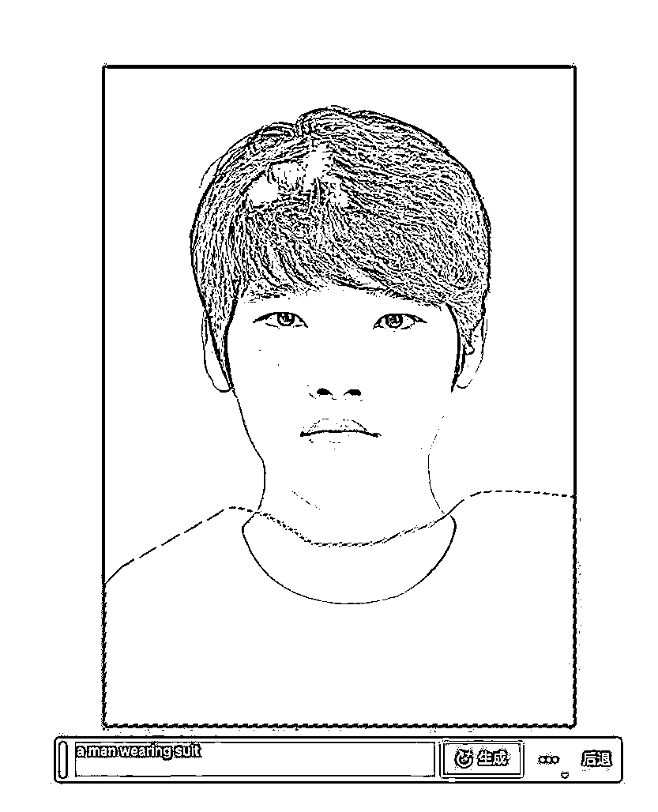
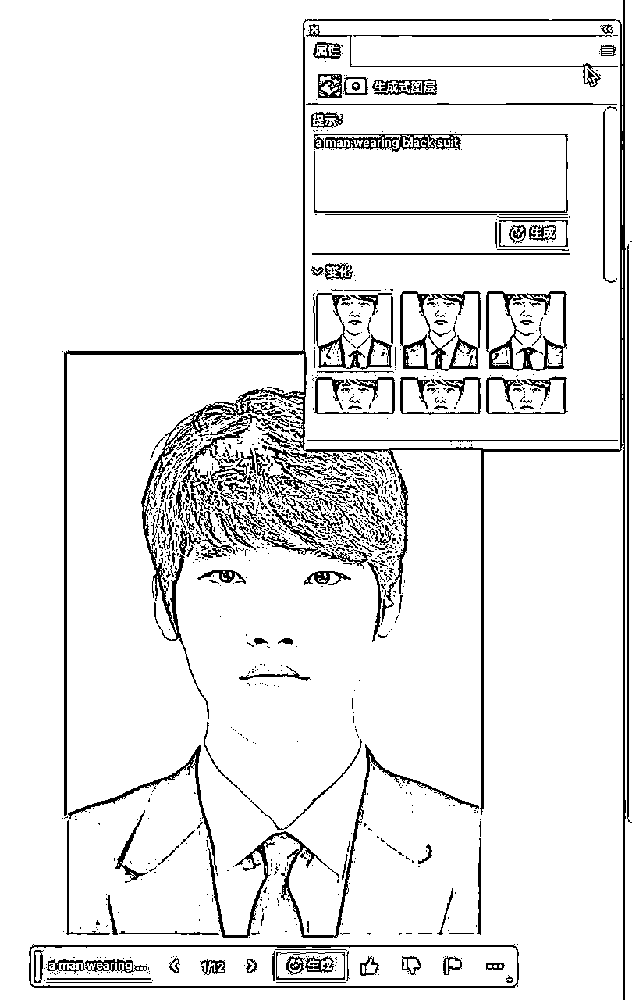
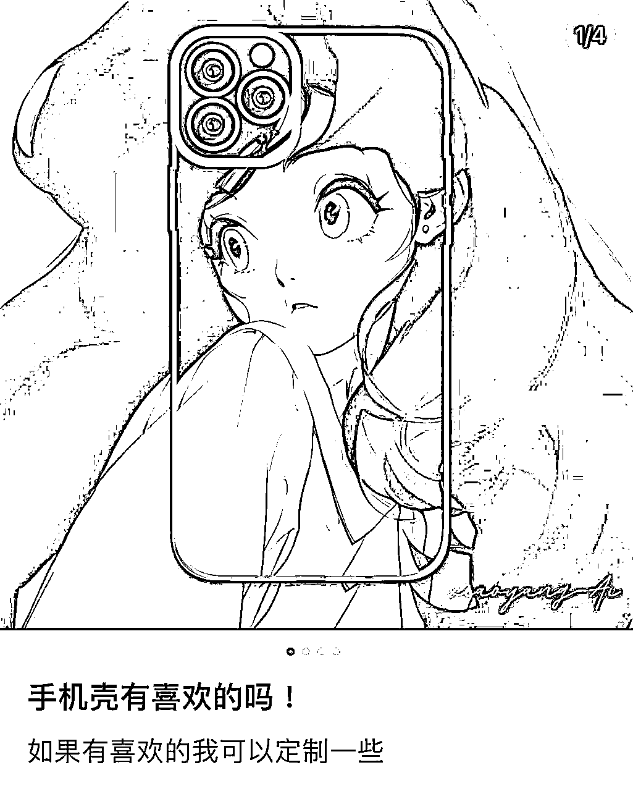
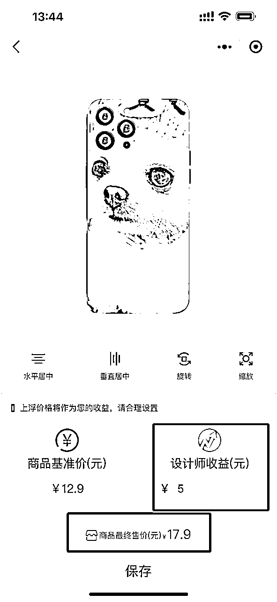
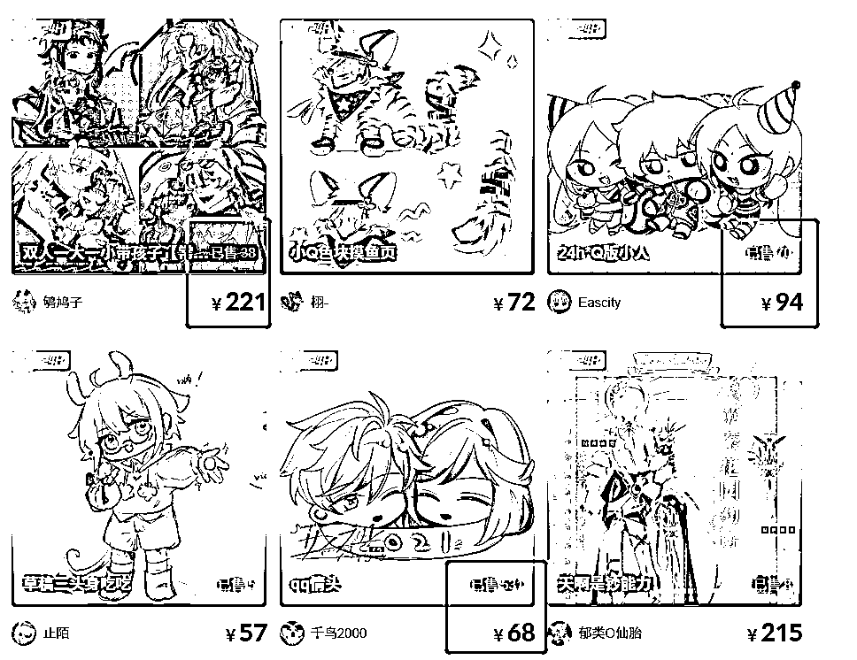
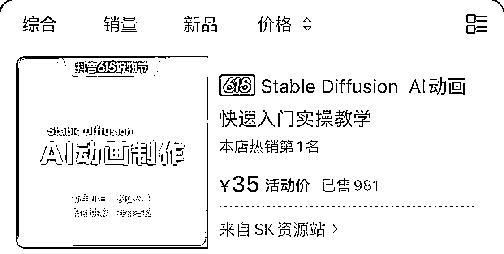
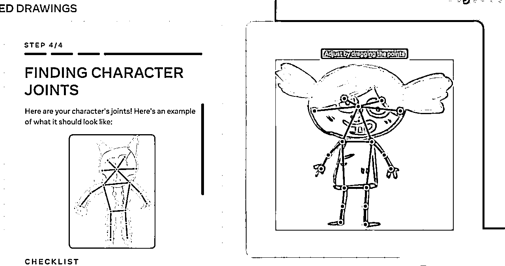

来源：https://ry5hwpuf7b.feishu.cn/docx/ORM5dBBY0o2C7kxT8A3cy7Rsnsd
《AI异常值案例库第2期，5个灵感案例，新型流量获客法和产品形态》
各位朋友好，我是吴东子，我每天会输入非常多的信息
我的所有资料都在公众号「吴东子AI」
其中有部分信息，也许蕴藏着巨大的变现机会，但我自己没有时间与精力去一一验证
所以我打算把这些信息分享出来，如果能启发到大家行动并拿到结果，那也算不浪费这个机会了
没有过多的拆解和分析，更多的是偏向于灵感启发
思考这里面的案例有没有你能做的，能复制的，能放大的
可能啥用没有，也可能黄金万两
感谢大家对第一期的喜欢，第二期来了
1.证件照新型P图法
2.MJ批量定制手机壳
3.画师新型流量获客法
4.AI技术视觉化变现
5.小孩涂鸦定制
严禁抄袭搬运，势必追诉到底！
大部分人都会有对职业照的需求，无论是学校要填写的资料，还是找工作的简历
但穿一套西装去拍一组职业照是比较麻烦的事情，甚至还贵
以往的方法是用PS把衣服覆盖上去，但总是会很别扭
现在用PS AI自动扫描生成衣服，多套可选，颜色可变，选到你满意为止
有需求，有产品能力，剩下就是找应用场景了
是自己做内容获客，还是和学校合作，亦或者给摄影馆培训？等等
PS AI的教程正在写，后续写完会分享出来



手机壳也是一个极大的市场，就像老罗打趣说的“卖手机的不如卖手机壳赚钱”
之前的手机壳要么是私人来图定制，或者厂商自带的有趣图片
而AI绘画可以做到：有趣照片+私人定制
这里也许有一定的市场空间
①直接作为产品售卖，可以结合之前的头像壁纸号私人定制图片
②衍生服务产品，例如：高单价头像定制就送手机壳
③做设计师帮厂商外包手机壳图片设计，赚分成收益
④除了手机壳还有其他定制产品：如衣服，鼠标垫，帆布包，笔记本




如果你是画师职业，在约稿平台上，原来大家都只能画一张传一张，这样获客和宣传自己太慢了
有没有可能利用AI绘画做出好看的图片，广撒网，快速放大自己的流量
再用自己本身已有的能力接定制约稿
甚至可能都不需要自己画，找到对应能画的画师，自己当中间人做资源整合赚差价

当时做火瞬息全宇宙穿越之旅的博主，后续出了一个教程卖了1000份，变现35000
教程我买了，基本就是把他的预设给你，然后录个视频给你讲解一下，交付很轻
（毕竟就只卖35块，你也不能要求啥）
如果你本身目前也有一定的AI技术，试着把这个技术视觉化，和大众会注意的结合起来
目前AI视觉化的内容其实还算比较容易爆，后续再做知识付费产品变现


比如下面这种
在小孩时期总有很多机会去发挥自己的创意，但也许在父母那没有得到较好的正反馈，最后就不了了之了
或者说以前根本没有机会给孩子好的正反馈，总不能送孩子去学艺术吧——对很多家庭来说还是太贵了
如果父母能用AI工具给孩子正反馈呢？不仅是多了家庭的陪伴，还让孩子创意具象化了
①孩子的涂鸦动起来，让孩子录几个动作，AI会分析涂鸦的骨架，从而实现一样的动作
②涂鸦3D画，变成二次元风格或者真人风格
这个不知道大家感不感兴趣啊，如果感兴趣的话我也可以出一个这个教程




好了，以上就是我们这篇文章的全部内容
如果你对AI感兴趣的话，可以关注我的公众号：吴东子AI，也欢迎分享给你身边想学AI技术的朋友
里面有我之前发过的所有文章，之后也会持续给大家更新实用的AI干货教程
我是吴东子，用奶奶都能听懂的方式，分享可以落地实操的干货，我们下篇文章再见！